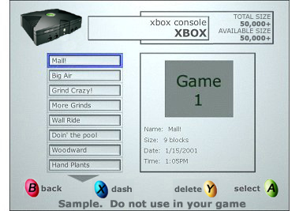
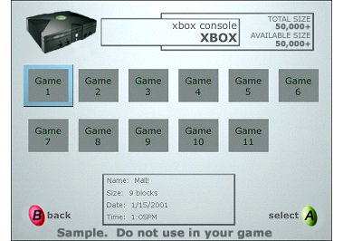

The second part of the load game screen is the selection of the game from the selected device. The following status message should be displayed to users when loading a game: "Loading game. Please don't remove memory units or disconnect any controllers." For a current list of sanctioned error messages, please see "Standard UI Messages" in the Xbox Guide.
The two models we had for the load game selection screen are presented below.
| Model | Screenshot |
|---|---|
| Combo |  |
| Thumbnail |  |
Usability Issues with Combo
Recommendation: Make the arrow a color that doesn't blend in with the background.
Recommendation: Add the text "X number of games" to the top of the description pane.
Participants favored this design over the GUI by a margin of four to three. They liked that the most recent saved games were at the top of the list. They also liked the ease of navigation with only one directional axis in use.
Usability Issues with Thumbnail
Recommendation: Make the cursor wrap from right to left and vice versa. Pressing right should always get the user to an older saved game if one exists.
Recommendation: Make sure the thumbnail is recognizable.
Participants who preferred this model did so because it was more graphical and they preferred to find a saved game by scanning the pictures rather than by reading.